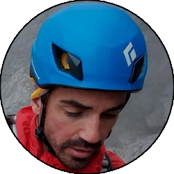

Relazione
| Data Uscita | 10-06-2023, Sabato | Area | Tre Signori |
|---|---|---|---|
| Luogo di Partenza | Pescegallo - Gerola Alta (SO) | Quota |
1454m la partenza 1900m (circa) l'attacco 2080m (circa) le cime dei denti |
| Dislivello | 700m (circa) | Tempi | 05:30 ore (04:00 ore il concatenamento) |
| Esposizione | Nord-Est | Difficoltà Tecnica | 5c |
| Punti di Appoggio | Rifugio Salmurano | Acqua | Diversi ruscelli sulla strada che sale |
| Partecipanti |
 Claudio G,
 Fra,
Francesco C, Fra,
Francesco C,
 Gabriele, Gabriele,
 Oracolo Oracolo
|
||
(clicca sull'immagine per scarica la traccia GPS)
Accesso
Da Lecco seguire la SS36 fino in Valtellina, per poi uscire a Morbegno Ovest (indicazioni Val Gerola-Passo San Marco). Alla rotonda seguire verso destra verso il centro di Morbegno, e incontrata poco dopo un'altra rotonda prendere a destra e poi subito a sinistra arrivando fino all'imbocco della val Gerola presso il bar Dolce Forno. Seguire la strada della val Gerola interamente, senza deviazioni, che termina proprio a Pescegallo nei pressi della partenza degli impianti (numerose possibilità di parcheggio).
Avvicinamento
Dal parcheggio seguire la strada carrareccia che si inerpica sul prato verso dove sale la seggiovia. Seguirla quasi in toto fino ad arrivare nei pressi del Rifugio Salmurano, dove si stagliano ben visibili i Denti della Vecchia sulla destra. Qui abbandonare la strada per prati, e individuare una traccia evidente (scritta sui sassi) che sale verso i denti, e nella parte finale attraversa un paio di paravalanghe. Salire fino alla base del primo dente; la via delle Guide attacca sulla sinistra di dei monotiri (scritta evidente).
Via
Via delle Guide L1: Salire il diedrino che diventa un po' più ostico a metà, per poi uscire su placca a sinistra prima del comodo terrazzino erboso di sosta.
» 30m, 9 resinati (4c, 5a, 5b)
» 30m, 9 resinati (4c, 5a, 5b)
L2: Salire la plachetta lavorata fino alla cengia di sosta, a destra di un albero.
» 15m, 4 resinati (4a)
» 15m, 4 resinati (4a)
L3: Traversare a sinistra superando l'albero e alzarsi sulla placchetta con passi delicati fino al resinato, uscire poi sullo spigolo di sinistra (più facile) e salire in verticale fino a dei comodi appigli e appoggi, tramite i quali si traversa a destra verso la sosta a metà placca.
» 20m, 5 resinati, 1 fix fuori via (5b, 4c)
» 20m, 5 resinati, 1 fix fuori via (5b, 4c)
L4: Salire dritti verso lo spigolo, superare uno strapiombino verso destra e obliquare fino a un diedro; da qui ritornare verso sinistra con arrampicata più facile fino al saltino finale, ben protetto che si supera a fatica fino alla grande cengia di sosta.
» 40m, 7 resinati, 2 fix, 3 chiodi (5b, 5c, 5a, 5c)
» 40m, 7 resinati, 2 fix, 3 chiodi (5b, 5c, 5a, 5c)
L5: Salire il muro verticale sopra la sosta, più appigliato di quanto sembra ma comunque faticoso, fino alla cresta finale dove si trova la sosta.
» 30m, 8 resinati, 4 chiodi (5b, 5c, 5a)
» 30m, 8 resinati, 4 chiodi (5b, 5c, 5a)
L6: Proseguire per la facile cresta finale che porta in cima al primo dente, dove si trova un'ottima sosta.
» 20m, 1 chiodo (2c)
» 20m, 1 chiodo (2c)
Raccordo: Dalla cima del primo Dente portarsi sul lato Est (verso il Rifugio Salmurano) e individuare una sosta di calata un po' esposta che con una doppia da 45m circa (buona parte nel vuoto) porta alla cengia dove Anita 2000 passa dal primo Dente al secondo.
» 45m di calata
» 45m di calata
Spigolo Sisu L7: Lo spigolo Sisu vero e proprio parte più sotto, noi l'abbiamo raggiunto in traverso da Anita 2000, diminuendo le difficoltà (in basso 5c da relazione). Traversare a sinistra girando lo spigolo, superando una zona erbosa con radici fino allo spigolo del Dente, dove si sosta.
» 15m, 1 resinato (3c)
» 15m, 1 resinato (3c)
L8: Seguire lo spigolo con bella arrampicata un po' atletica fino alla sosta.
» 20m, 5 resinati (5a, 4b)
» 20m, 5 resinati (5a, 4b)
L9: Proseguire in verticale per facile placca senza percorso obbligato, fino ad arrivare sotto alla cima del secondo Dente. Possibile raggiungerne la cima su facili roccette, ritornare comunque a questa sosta per la discesa.
» 25m, diversi resinati (4b, 4a)
» 25m, diversi resinati (4b, 4a)
Discesa
Con due doppie abbastanza aeree ma belle, da circa 40m sul versante Est (via la Benza) si arriva sulla cengia sotto al secondo Dente. Da qui percorrere verso sinistra (faccia a valle) tornando al punto dove si è attaccata la via delle Guide, e da lì a Pescegallo seguendo a ritroso il percorso dell'avvicinamento.